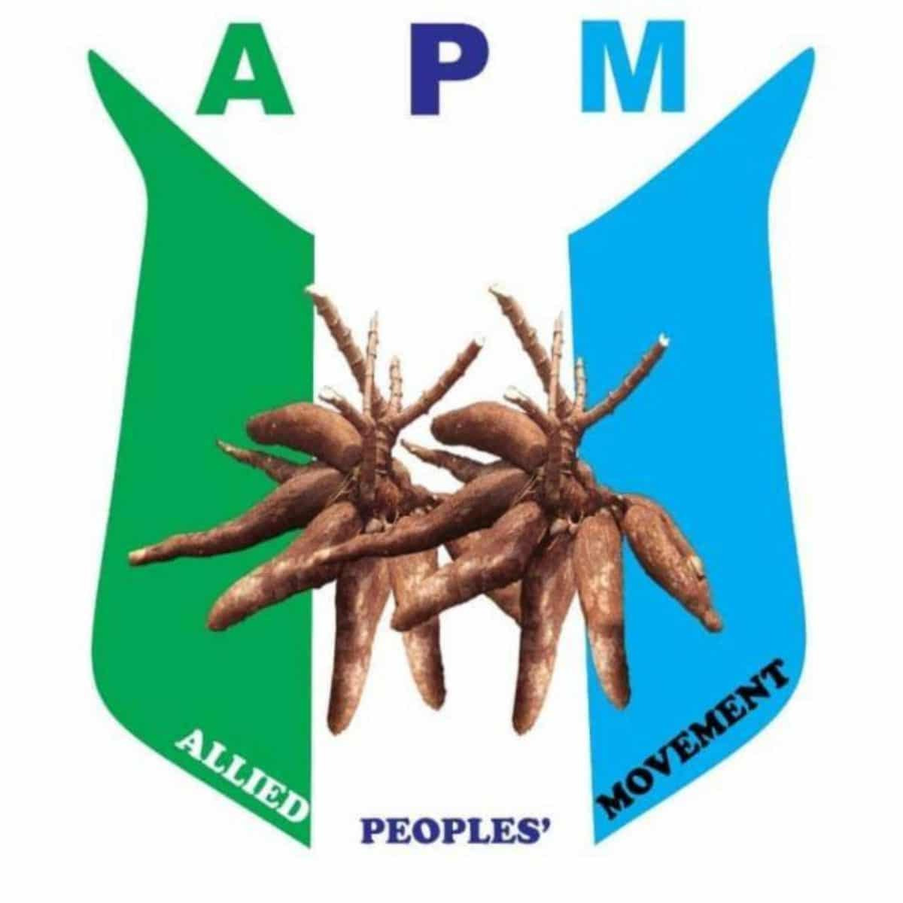

Security
Protecting lives, property and communities through capable, accountable institutions.

APMAllied Peoples' Movement Join APMAllied Peoples' Movement
A political movement committed to accountable leadership, equal opportunity and a secure, prosperous Nigeria.
Our purpose
APM exists to strengthen democratic institutions, protect every citizen's dignity and build a country where opportunity is not determined by origin, faith, gender or circumstance.
We believe public office is a responsibility: to listen, to serve and to deliver measurable progress in every community.
What we stand for
Six commitments guide our approach to government and public service.
Protecting lives, property and communities through capable, accountable institutions.
Equal justice, transparent government and institutions that work without fear or favour.
Empowering states and local communities to solve problems closer to the people.
Backing enterprise, decent work and sustainable growth that reaches every household.
Modernising agriculture and strengthening the people who feed our nation.
Building common purpose from Nigeria's cultural, linguistic and religious diversity.
National leadership
The National Working Committee coordinates the party's organisation and national programmes.
National Chairman
National Secretary
National Treasurer
National Financial Secretary
Party resources
Structure, principles, membership and governance of the party.
Register online and receive your official party membership ID.
Take part
Join citizens across the country working for integrity, service and opportunity.
Join the movement